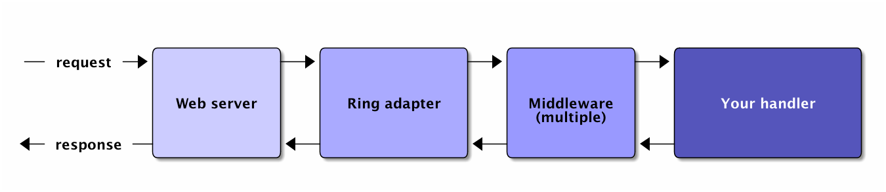

Functional Web Development with Clojure
Type T to begin the slide show.
Table of Contents
- 1 Functional Web Development with Clojure
- 2 Introduction
- 3 One-Slide Clojure Intro
- 4 Moving Parts
- 4.1 Moving Parts
- 4.2 Responding with Ring
- 4.3 Setting up a Ring app
- 4.4 A simple Ring app
- 4.5 Routing with Compojure
- 4.6 Compojure - URL params
- 4.7 Compojure - request params
- 4.8 Compojure - request params
- 4.9 Compojure - special routes
- 4.10 Compojure - intelligent responses
- 4.11 App review
- 4.12 Templating
- 4.13 HTML generation with Hiccup
- 4.14 More Hiccup examples
- 4.15 Hiccup + normal Clojure
- 4.16 App review
- 4.17 JSON generation with Cheshire
- 4.18 Reading JSON with Cheshire
- 4.19 Generating CSS with Garden
- 4.20 Serving up generated CSS
- 4.21 lib-noir
- 4.22 lib-noir features
- 4.23 The lib-noir handler
- 4.24 Responses with lib-noir
- 4.25 Login with lib-noir
- 4.26 Route protection with lib-noir
- 4.27 App review
- 4.28 REST APIs with Liberator
- 4.29 Simple Liberator decision tree
- 4.30 Simple Liberator example
- 4.31 Liberator context
- 4.32 Liberator context on decision failure
- 4.33 More complex decision tree
- 4.34 Liberator decisions
- 4.35 Liberator handlers and actions
- 4.36 Liberator's decision graph
- 4.37 Liberator representations
- 4.38 App review
- 4.39 ClojureScript
- 4.40 Building JS from CLJS
- 4.41 Sharing code between Clojure and ClojureScript
- 4.42 App review
- 4.43 Summary
- 5 Pulling Things Together
- 6 Future Approaches
- 7 Conclusion
- 8 End
1 Functional Web Development with Clojure
Clinton Dreisbach
clojurewebdev.com
2 Introduction
2.1 Introduction
Hello, I'm Clinton.
Clojure is fun.
Web development is weird.
2.1.1 Notes notes
Hi, I'm Clinton! I am just a programmer who likes Clojure and uses it for web development. I work for the federal government.
Anyway, what do you all do? Who here knows Clojure already? Who uses it at work? What about for web development?
(If there's not too many people, go around the room and have quick introductions.)
2.2 The Problem
Web development is too big.
2.2.1 Notes notes
The problem with web development is that is it too big. What do I mean by that? Let's go to the next slide and see.
2.3 Many languages
- HTML
- CSS
- JavaScript
- One or more server-side languages
2.3.1 Notes notes
Web development is a true polyglot experience, not in a good way. Polyglot development can be great when you choose the right language for the right job, but web development doesn't give you that choice: the three languages you need for just the front-end are predetermined, and you need to use at least one other language for the back-end, likely two if you're connecting to a database.
2.4 Many moving parts
- web server
- routing
- templating
- API generation
- code generation (
rails generate) - data modeling and validation
- sessions/authorization
- app configuration
- DOM manipulation
2.4.1 Notes notes
Not only does web development come with a mess of languages, but it also has a plethora of moving parts, and each comes with a set of choices. You have to choose your web server, how to model your data, and what database to use, if you're using a database. You have your choice of templating languages. Depending on what you are using, you might have to choose how to configure your app and how to handle user sessions.
2.5 Approaches
The traditional approach: frameworks.
Another approach: using the same language for client- and server-side code.
2.5.1 Notes notes
One approach to dealing with the problem of web development is an integrated framework. Frameworks are useful, but they don't solve the problem of having multiple languages to deal with. Lately, another solution has become popular: use the same language for the front and back ends. The problem is that because the browser determines the language you have to use for the front-end, it determines your back-end. There have been some solutions, like Opa and Elm, that abstract this out into another language, which is interesting, but we're going to focus on Clojure today.
2.6 Frameworks
- Rails
- Django
- For Clojure:
- Noir - now deprecated
- Pedestal - very new
- CHP - also very new
- Luminus - curated collection of libraries
2.6.1 Notes notes
One approach to solving this problem is to build a framework. For Ruby, there's the Rails framework, and for Python, there's the Django framework, both of which I've spent a lot of time with. These come with a set of opinionated choices, some of which might be easy to change and some of which might not. This has a lot of good advantages: the different parts of the framework are guaranteed to fit together well, and the learning curve is easier, as you learn one approach for each thing you need to do. It comes with its own problems, too, of course. The choices are already made for you and might not be easy to change for your needs. You get the whole kitchen sink, even if you only need a little bit of it.
Clojure has its own set of frameworks; as you can see, that has not been the most successful approach. The first major framework, Noir, has been deprecated by its author. Pedestal is a very new and very alpha framework. CHP is an oddball. It seems like a mix of PHP and Ruby on Rails in Clojure. Luminus is, in my opinion, the most promising, which ties into the Clojure approach.
2.7 Libraries
The Clojure way: lots of loosely coupled libraries.
Pros: flexible, able to move fast.
Cons: instead of knowing 4 languages + a framework, now you get to learn a lot of libraries.
2.7.1 Notes notes
And what is the Clojure approach? With web development, and in most contexts, the Clojure ecosystem is more focused on small libraries. The benefits are plenty and obvious: smaller libraries can move faster to fix bugs and add features. You can choose just the parts you need for your application with no extra cruft.
The downsides are plentiful as well, unfortunately. Individual libraries are of varying quality. Libraries might have very different interfaces, requiring you to build facades between them. And of course, the learning curve can be much worse. Not only is documentation decentralized, but you have to understand and choose between multiple options for each part of your web application.
How does Clojure deal with this? The interface issue is minimized because Clojure has a small set of data structures with a simple set of abstractions to use on them. The quality issue is real and is only mitigated through recommendations, which is why I like the approach of Luminus, which we'll talk about more later. The documentation issue -- well, that's why I'm here today.
2.8 Why Clojure?
- Your domain is data manipulation or needs concurrency
- Access to all Java libraries
- Quick development with the REPL
- Good tooling with Leiningen
- Simple deployment with WAR files
- Clojure is fast
2.8.1 Notes notes
Before we get started, there's a question I need to answer: why use Clojure as your one language for web development? There's the obvious answer that it has the facilities to do it and not all languages do, but there's X-to-JavaScript compilers for just about anything these days and writing a compiler to turn data structures into HTML and CSS is trivial. That reason doesn't really stand on its own.
Here's my answers. First, your domain may push you toward Clojure or another functional language. Clojure's immutability, persistent data structures, and ease of concurrency make it a natural match for handling large amounts of data. Are you writing a search engine? Clojure will work for you. What about a data API to search all US mortgage applications for the last 5 years? Clojure will work for you.
The other reasons move past your particular domain into why it's a good general-purpose web development language. You have a ton of great libraries and you don't have to use Java to use them. Leiningen and the REPL make the development process easy and quick. There's no waiting around for re-compilation and you can change your environment on the fly. Deployment is easy for anyone who's deployed a Java app. And lastly, Clojure is really fast compared to other dynamic languages. It has the JVM startup time, but after that, it smokes Ruby, Python, Perl, or many other dynamic languages.
2.9 Libraries
Just a few of the common libraries you'll use:
- Ring
- Compojure
- libnoir
- Hiccup
- Garden
- ClojureScript
2.9.1 Notes notes
These are the core libraries I recommend if you're building a web application with Clojure. We're going to talk about them and others today. There's no need to dwell on this too much, but if you're going to check out for the next 3 hours, write these down and check them out later.
2.10 Structure
Part 1: Current recommendations. We're going to go through the moving parts of a sample application and talk about Clojure approaches and recommend libraries.
Part 2: Future approaches. Ideas that aren't ready for primetime yet, but are awesome.
2.10.1 Notes notes
This is the structure we're going to follow. We're going to spend the first half to two-thirds of the class talking about reasonable web development with Clojure, stuff that works well today and will do you right. We are going to have lots and lots of real code to look at and will spend as much time in the code as on slides.
After we get through the reasonable stuff, we're going to get to the future fun stuff. I know, saving the most fun for last isn't the best idea, but I want to cover the practical stuff while you're still fresh.
Don't worry, we will have lots of breaks. Also, please feel free to stop me and ask questions. I'll try to stop plenty and ask you, but if I forget, interrupt me and ask.
3 One-Slide Clojure Intro
:hello ; keyword (1 2 3) ; list [1 2 3] ; vector {:a 1, :b 2} ; map (:a map) ; get value from a map (take 2 [1 2 3]) ; calling function take with two args ;; defining a function (defn subset [coll n m] (drop n (take (+ n m) coll))) ;; assigning values with let (let [a 1 b 2] (+ a b))
3.1 Notes notes
If you don't already know Clojure, here's an introduction in one slide that should help you understand the syntax for the rest of this talk.
At the top, you can see data types specific to Clojure. There's strings and numbers and all the rest, but those are the same as they are in most languages. There's a keyword, which like a constant string. It evaluates to itself and makes equality tests very fast. They are usually used as keys in hash-maps.
There's lists, which you will rarely see used to store data, and vectors, which you will see. It's the same as an array in many other languages. There's maps, also known in other languages as hash-maps, hashes, or dictionaries. Below the map, you can see how you might look up something in a map. This only works if you use keywords as the keys in the map.
Next, you can see how to call a function in Clojure. It works like any
other Lisp, a list with the function in the head position and the
arguments after that. You define a function with defn like you can
see below that. There's a function name, a vector with argument names,
and then the body of the function.
Lastly, you can see how to assign values to symbols using let. You will see this construction a lot. If you've used a Lisp before, you get this; if not, imagine it as assigning variables just inside the let statement.
4 Moving Parts
4.1 Moving Parts
Let's way through all the parts of a standard Clojure web application, including some optional ones.
4.2 Responding with Ring

4.2.1 Notes notes
Ring abstracts HTTP requests and responses into a simple API.
First, the Ring adapter takes a request from your web server and turns it into a map of the request headers, URL, request type, body, and the like. This allows you to use different web servers - Jetty, Tomcat, JBoss, or whatever - and use the same interface for dealing with requests.
It passes this request map on to middleware, if you have specified any. Middleware is another pass-through function that manipulates the request or response map in some way. One example that you would often use is ring.middleware.params, which parses out the parameters from the query-string or the POST body and turns them into a map, which it puts into the request map.
After middleware, the request map arrives at your application. Like Ring middleware, your application should take a request map and return a response map. Unlike Ring middleware, you will be generating the response map: middleware will take this response and alter it or pass it on. The response map needs to have the keys status and headers and usually has a body key.
If you come from another language, you might have something like this. Ring is very similar to Ruby's Rack, WSGI in Python, Plack in Perl, or Connect in node.js.
You can see Ring is a pure functional design. The application is made up of functions with the same interface, allowing those functions to be composed. Obviously, you can make it not pure by introducing global resources and side-effects, but when possible, keeping to this functional design makes your application easier to reason about and test.
4.3 Setting up a Ring app
(defproject request-echo "0.1.0-SNAPSHOT" ;; We require ring. :dependencies [[org.clojure/clojure "1.5.1"] [ring "1.1.8"]] ;; We use the lein-ring plugin to start ring. :plugins [[lein-ring "0.8.3"]] ;; We tell Ring what our handler function is and ;; what port to start on. :ring {:handler request-echo/handler :port 3001})
lein ring server
4.3.1 Notes notes
This is how you set up a Leiningen project to run a Ring application. You need to require ring, of course, but you also probably want to use the lein-ring plugin. There's other ways to start up Ring, but this is the easiest way if you're just getting started.
4.4 A simple Ring app
(ns request-echo (:require [clojure.pprint :refer [pprint]])) (defn handler "Return the request as HTML." ;; A request comes in the handler. [request] ;; The handler returns a response map. {:status 200 :headers {"Content-Type" "text/html"} :body (str "<h1>Request Echo</h1><pre>" (with-out-str (pprint request)) "</pre>")})
4.4.1 Notes notes
This is a full Ring handler. It's not much of an application: it just returns your request pretty-printed. See how it takes a request, which is just a map, and then returns a new map, the response, with the keys body, headers, and status.
Let's go look at this in action (go to the code here.)
If this looks overly simple, it's because it is simple. You can build
an entire application with just this. You could use cond or case
and some regexes to route requests to different functions and use
middleware for any site-wide processing you wanted to do. That leaves
you building a lot of infrastructure, though, so let's look at a
routing library, Compojure.
4.5 Routing with Compojure
(require '[compojure.core :refer [routes]]) (require '[compojure.route :as route]) (routes ;verb route parameters handler (GET "/" [] (index-page)) (GET "/debts/:person" [person] (person-page person)) (GET "/add-debt" [] (add-debt-page)) (POST "/add-debt" [from to amount] (add-debt-post {:from from, :to to, :amount amount})) (route/resources "/") (route/not-found "Page not found"))
4.5.1 Notes notes
This is a route set defined using the Compojure library. They might look self-explanatory. For most routes, you start with a verb, like GET, then the route you want to handle. You put any parameters you want to capture, and then put a handler. This handler will be called when a request that matches its route comes in.
The routes macro returns a Ring handler - it just defines a function
that takes a request and routes it to another function, then returns
the result of that function.
4.6 Compojure - URL params
(require '[compojure.core :refer :all]) (require '[compojure.route :as route]) (routes (GET "/" [] (views/index-page db)) ;; What's this? :person is a placeholder. It is used as a ;; parameter in this route and sends that on to the handler. (GET "/debts/:person" [person] (views/person-page db person)) (GET "/add-debt" [] (views/add-debt-page)) (POST "/add-debt" [from to amount] (views/add-debt-post db {:from from, :to to, :amount amount})) (route/resources "/") (route/not-found "Page not found"))
4.6.1 Notes notes
Take a look at our second route. It is using a placeholder in the route definition. Placeholders start with a colon and match any string. I want to use that placeholder in my handler, so I put its name in the vector of parameters to capture.
You probably are wondering where db came from. In this case, this
code is the body of a function that takes a database and returns a
routeset. The database is being closed over so I have access to it in
my application: it's not a parameter from the routes.
4.7 Compojure - request params
(require '[compojure.core :refer :all]) (routes ;; from, to, and amount are not in the URL. So where do they ;; come from? They are, in this case, request params from ;; the form. This syntax can also be used to capture request ;; params from the query string. (POST "/add-debt" [from to amount] (add-debt-post db {:from from, :to to, :amount amount})) ;; Clojure destructuring (POST "/add-debt" {{from :from, to :to, amount :amount} :params} (add-debt-post {:from from, :to to, :amount amount})))
4.7.1 Notes notes
As I mentioned, routes is a macro, and like most macros, it can be a
little confusing. The parameters are a special destructuring form used
by Compojure. You can see in this line for "/add-debt" that we are
getting the "from," "to," and "amount" request parameters from the
form post.
If you provide a map instead of a vector, you use regular Clojure destructuring. You can see an example of that on the second definition for POST "/add-debt".
4.8 Compojure - request params
(require '[compojure.core :refer :all]) (routes ;; Super-special Compojure destructuring. (POST "/add-debt" [from to amount :as req] (add-debt-post req {:from from, :to to, :amount amount})))
4.8.1 Notes notes
If we want to pass the entire request on to our handling function, Compojure lets you do that through its destructuring. Just add an :as keyword and a var name for the request to the vector. This works even if you do not have params you are capturing before the :as keyword.
4.9 Compojure - special routes
(require '[compojure.core :refer :all]) (require '[compojure.route :as route]) (routes ;; Special routes. (route/resources "/") (route/not-found "Page not found"))
4.9.1 Notes notes
Compojure gives you a few special routes as well. We're using two
here. The resources route lets you serve up any resources that are
on the classpath, which is nice for static files such as CSS,
Javascript, or images. The not-found route captures any URL and
returns with a 404 status and the body provided.
4.10 Compojure - intelligent responses
(defn index-page [debts] (str "<h1>Balances:</h1><pre>" (balances debts) "</pre><h1>All debts:</h1><pre>" (simplify debts) "</pre>"))
4.10.1 Notes notes
Compojure adds some intelligence to responses. If you return something that is not a response map from a handler function, Compojure attempts to coerce it into a response map. Strings are turned into the body of a response with status 200 and content-type text/html. Other things you can return are files, InputStreams, references and functions.
4.11 App review
Let's take a few minutes and look at the sample application we have so far, so you can see how all this fits together.
tag: ex-compojure
4.12 Templating
- HTML
- JSON
- CSS
4.12.1 Notes notes
Templating is transforming data into some text format and is an important part of any web application. We are going to cover HTML, JSON, and CSS templating, although there's obviously lots of other formats you may want to output.
4.13 HTML generation with Hiccup
Hiccup turns Clojure data structures into HTML.
(require '[hiccup.core :refer [html]]) (html [:a.btn ; element + class or id {:href "/go"} ; map for attributes "Click here"]) ; Content ;;=> "<a class=\"btn\" href=\"/go\">Click here</a>"
4.13.1 Notes notes
The idea of Hiccup is very simple: take Clojure data structures and transform them into HTML. Elements are represented by vectors with a required first member of a keyword. This can be just the tag name, or a CSS-style selector with dotted class and hashed id syntax.
The vector can have one or more other elements. If the second element is a map, it is used as attributes for the tag. All other elements, including the second element if it is not a map, are treated as content for the tag.
4.14 More Hiccup examples
(require '[hiccup.core :refer [html]]) (html [:h1]) ;;=> "<h1></h1>" (html [:link {:rel "stylesheet" :type "text/css" :href "/public/css/main.css"}]) ;;=> "<link href=\"/public/css/main.css\" ;; rel=\"stylesheet\" ;; type=\"text/css\" />" (html [:begone "devil"]) ;;=> "<begone>devil</begone>"
4.14.1 Notes notes
Note how the h1 tag has no content, but a closing tag is inserted,
while with the link tag, there is no closing tag. Hiccup contains
some small logic about the structure of HTML tags. However, Hiccup
does not stop you from using nonexistent tags, as you can see from the
last example.
4.15 Hiccup + normal Clojure
(require '[hiccup.core :refer :all]) (def owes [["Pete" 4.25] ["Lisa" 12.10]]) (html [:h1 "You owe:"] [:ul (if (zero? (count owes)) [:li "Nothing!"] (for [[person amount] owes] [:li (str person ": $" amount)]))]) ;; => "<h1>You owe:</h1><ul><li>Pete: $4.25</li><li>Lisa: $12.1</li></ul>"
4.16 App review
Let's look at the views we've created so far so we can see how this all fits together.
tag: ex-hiccup
4.17 JSON generation with Cheshire
(require '[cheshire.core :as json]) (let [debts (:debts @db) balances (debts/balances debts)] {:status 200 :headers {"Content-Type" "application/json"} :body (json/generate-string {:debts debts :balances balances})})
4.17.1 Notes notes
Cheshire turns Clojure maps and vectors into JSON. You'll notice that in this code, I make the response map as opposed to with the HTML views. Compojure is smart about turning whatever you give it into a response map, but it assumes you're giving it HTML, which we're not, so we have to be more explicit.
4.18 Reading JSON with Cheshire
(require '[cheshire.core :as json]) (routes (POST "/add-debt.json" {body :body} (views/add-debt-json db (slurp body)))) (defn add-debt-json [db body] (json/parse-string body))
4.18.1 Notes notes
Parsing JSON is simple with Cheshire, but there is something important to note here when building a JSON API. If you want to parse JSON in a POST body, you need to know that the request body is not a string, but is instead an InputStream. You can convert it to a string using the slurp function.
4.19 Generating CSS with Garden
(require '[garden.units :as u :refer [px pt]]) (def default-color "#EFE") [[:body {:background-color default-color}] [:.btn-primary {:border-width (px 5)} [:&:hover {:border-color "black"}]]]
4.19.1 Notes notes
In the same way that Hiccup turns Clojure data structures into HTML, Garden turns data structures into CSS. Why is this useful? Well, CSS is another language to know, which can be annoying, but more importantly, CSS lacks several features that have caused others to build CSS preprocessors in the past. CSS lacks symbolic names for values; reusable, composable chunks; and nested definitions. You can use another preprocessor like Sass or Less for this, but as long as you are using Clojure, why not stick with that?
While what you're seeing on this slide doesn't cover all of Garden -- it has interesting support for media queries, for example – it still might make you ask why you would use this, especially in light of tools like Compass that allow you to pick and choose from pre-written CSS packages and come with lots of functions to manipulate CSS values. Garden is still very young and support for things like this are in the pipeline. If you know CSS and like using Clojure, this is a project I highly recommend getting involved with and contributing to.
4.20 Serving up generated CSS
(routes (GET "/*.css" {{path :*} :route-params} (views/css-page-memoized path))) (require '[garden.core :refer [css]]) (defn css-page [path] (when-let [garden-url (io/resource (str "public/" path ".garden"))] (let [garden-data (load-file (.getPath garden-url))] {:status 200 :headers {"Content-Type" "text/css"} :body (css garden-data)}))) (def css-page-memoized (memoize css-page))
4.20.1 Notes notes
The star in the path for the CSS generation route just means capture anything. In our case, we suffix that with dot-css, so capture any request with a path that ends in dot-css.
This view function looks to see if we have a file in resources/public/ that matches the requested path with the extension .garden. If so, we load the file and pass the result of evaluating the file to the css function to produce CSS. Obviously, doing this every time is more expensive than just serving up a CSS file, so I memoize it.
An important point to know here is that if our view function returns
nil, Compojure will move on to the next match in the routes. Using
when-let to see if we have a resource that matches our path causes
us to return nil if we do not have the resource. This allows us to put
this before the match-all public resource route and still allow
vendored CSS files, like Bootstrap, to be served.
Is this the best way to do this? Probably not. What would be even better – in many cases – would be a Leiningen plugin that compiles our Garden-based spreadsheets to CSS so we can serve up static files. This is again a golden opportunity for someone to get involved. Still, the way we are doing this, especially with the memoization, works well for our purposes.
4.21 lib-noir
- Noir is dead, long live Noir
- Noir was a web framework for Clojure with lots of interesting ideas that ended up being less than the sum of its parts
- So lib-noir was born: the best of its parts pulled out into a reusable library
4.21.1 Notes
As you can read on the slide, Noir is a web framework for Clojure that is now deprecated. It was full of interesting ideas and definitely helped make web development in Clojure easier, but over time, Clojure best practices jelled around using discrete composable libraries over frameworks and Noir's author, Chris Granger, deprecated it. The best parts of it were then pulled into a reusable library, lib-noir.
4.22 lib-noir features
- stateful sessions, cookies
- file uploads
- easier response management
- input validation
- route filtering
- content caching
4.22.1 Notes notes
lib-noir, being the best parts of a web framework extracted into a library, is a grab bag of features, including cookies, input validation, and utility functions around routes and responses. Let's go through a few of them to show what they can do.
4.23 The lib-noir handler
(require '[noir.util.middleware]) (defn create-handler [db] (noir.util.middleware/app-handler [(create-routes db)]))
4.23.1 Notes notes
The noir.util.middleware namespace includes many Ring middleware to
make development easier and to enable Noir features. In order to use
Noir's session handling and route restrictions, we have to use
app-handler. Unlike compojure.handler's app handler, Noir's
app-handler takes a vector of routers.
4.24 Responses with lib-noir
(require '[noir.response :as response]) (response/set-headers {"x-defcon" 3} (response/status 400 (response/json {:ok false :errors (debt-validator debt)})))
4.24.1 Notes notes
noir.response gives us a set of composable methods to build up
responses. This is nothing special that you couldn't do on your own,
but it's a nicety and a good example of how a uniform interface - take
in a response and return a response - enables composition.
4.25 Login with lib-noir
Use noir.session to handle session data, including login.
(require '[noir.session :as session]) (defn login [credentials] (when (valid? credentials) (session/put! :user (:username credentials)))) (defn logout [] (session/remove! :user))
4.25.1 Notes notes
noir.session uses an in-memory store to give us a stateful way to
handle user data over HTTP, a stateless protocol. This is the first
place in our application we have used data not passed into our
function. It is a little unfortunate we have to do us, but balancing
purity with practicality is necessary.
Besides just letting us store session data, noir.session gives us
flash-like functionality: that is, data that will last for only one
request, allowing us to pass messages from form handlers to their
redirected pages.
There is a more complex library to do authentication and authorization I should mention: "friend" by Chas Emerick. It is a solid library that goes way beyond this, but I could also talk about it for an hour, so it's something to investigate on your own when you need a more robust login system than this.
4.26 Route protection with lib-noir
(require '[noir.session :as session]) (require '[noir.util.route :refer [restricted]]) (defn- logged-in? [request] (session/get :user)) (def app-routes (routes (GET "/debts" [] (views/index-page db)) (GET "/add-debt" [] ;; This route will be checked for access rules. (restricted (views/add-debt-page))))) (defn create-handler [db] (app-handler [app-routes] :access-rules [{:redirect "/login" :rules [logged-in?]}]))
4.26.1 Notes notes
Wrapping a route view function in restricted causes Noir to check
its access rules before calling the function. By default, any Noir
access rules applies to all restricted routes, but you can specify the
URL prefix for a rule with a :uri key. In this example, you can see
that if you try to go to /add-debt if you are not logged in, you will
be redirected to the login page.
You can specify any number of access rules and by default they all have to pass, but Noir does allow for finer-grained control with AND and OR boolean logic to determine which rules have to pass, although we are not going to cover that here.
4.27 App review
Let's look at the application now to see how all this fits together.
tag: ex-noir
4.28 REST APIs with Liberator
- Liberator provides resources
- Resources are decision trees
- Resources provide a REST interface
- Resources are Ring handlers
4.28.1 Notes notes
Liberator introduces a new layer into our application between the handler and the views: resources. Resources provide a RESTful interface and use a decision tree made up of decision functions to guide your request to the right handler function. Let's look at an example.
4.29 Simple Liberator decision tree
4.30 Simple Liberator example
(require '[liberator.core :refer [defresource]]) (defresource hello :exists? (fn [ctx] (let [lang (get-in ctx [:request :params :lang])] (contains? #{"en" "es"} lang))) :handle-ok (fn [ctx] (let [lang (get-in ctx [:request :params :lang])] (if (= lang "es") "Hola mundo!" "Hello world!"))) :handle-not-found (fn [ctx] "Language not found."))
4.30.1 Notes notes
Look at the exists? function. It takes a context, which all
functions in a resource should take. The context has the request in
it, as well as the response. In this resource, we look to see if the
language parameter is equal to "en" or "es" and if so, then
handle-ok is called. If not, handle-not-found is called. We did
not have to define handle-ok and handle-not-found: Liberator
provides default functions for all decisions and handlers.
There's repeated code here, though, to look up the language, and I
probably should have looked it up a third time in
:handle-not-found. Let's see how we can fix that.
4.31 Liberator context
(require '[liberator.core :refer [defresource]]) (defresource hello :exists? (fn [ctx] (let [lang (get-in ctx [:request :params :lang])] (if (contains? #{"en" "es"} lang) {:lang lang}))) :handle-ok (fn [ctx] (let [lang (:lang ctx)] (if (= lang "es") "Hola mundo!" "Hello world!"))) :handle-not-found (fn [ctx] "Language not found."))
4.31.1 Notes notes
See here how we returned a map from exists?? Any time we return a
map, it is merged into the context map and available elsewhere. We
could have even used destructuring to pull lang out, but I didn't
want to confuse the issue. That's more idiomatic of my usage, though.
We can't get lang so easily in handle-not-found, though. Liberator
does provide a way, however.
4.32 Liberator context on decision failure
(require '[liberator.core :refer [defresource]]) (defresource hello :exists? (fn [{:keys req}] (let [lang (get-in req [:params :lang])] ;; Return a vector instead of a map. [(contains? #{"en" "es"} lang) {:lang lang}])) :handle-ok (fn [{:keys [lang]}] (if (= lang "es") "Hola mundo!" "Hello world!")) :handle-not-found (fn [{:keys [lang]}] (str "Language " lang " not found.")))
4.32.1 Notes notes
Instead of returning a map from a decision function, we can return a length-2 vector, where the first element is whether the decision passed and the second is the map to update the context with.
4.33 More complex decision tree
4.34 Liberator decisions
- allowed?
- authorized?
- exists?
- existed?
- known-content-type?
- method-allowed?
- moved-permanently?
- moved-temporarily?
4.34.1 Notes notes
These are just a few of the decisions in Liberator. The full list is very long, but luckily all of them have reasonable defaults, so you only need to define the ones pertaining to your resource.
4.35 Liberator handlers and actions
- Handlers
- handle-ok
- handle-created
- handle-forbidden
- handle-not-found
- handle-not-implemented
- Actions
- post!
- put!
- delete!
4.35.1 Notes notes
Like with the decisions, these are only a few of the handlers in
Liberator. These are all the actions in Liberator, though. I didn't
mention actions before, but they are what they look like: functions
for dealing with requests that do not use the GET method, and which
likely have side-effects. These do continue on to handlers. For
example, post! checks a decision function, new?, after it
completes successfully. If new? is true, handle-created is called.
4.36 Liberator's decision graph
{kind=link}
4.37 Liberator representations
- Handlers return representations
liberator.representation/Representationis a protocol- This protocol defines
as-response, which returns a Ring response - Very tricky: maps extend this protocol
- Use
liberator.representation/ring-responseto avoid transformation
4.37.1 Notes notes
Like Compojure, Liberator tries to do the smart thing with your response. Unlike Compojure, Liberator has a lot more logic around this and does not treat maps as Ring responses. Depending on the content-type, your map might be rendered as an HTML table, a CSV, or transformed into JSON or XML. If you have a map you have created as a Ring response, make sure to use liberator.representation/ring-response to designate it as a response. This has bit me as a subtle bug in the past.
4.38 App review
Let's see how we have used Liberator to turn parts of our application into reusable resources.
Tag: ex-liberator
4.39 ClojureScript
Compiles Clojure to JavaScript
(js/alert "Hello, world!") (.log js/console "Hello, world!")
alert("Hello, world!"); console.log("Hello, world!");
4.39.1 Notes notes
ClojureScript is a Clojure-to-JavaScript compiler. We could spend three hours on ClojureScript alone, and so any discussion of ClojureScript here will be at a cursory level. It is important, though, as it completes our ability to do web development with one unified language.
4.40 Building JS from CLJS
Add the lein-cljsbuild plugin to your project.clj.
(defproject we-owe "0.1.0-SNAPSHOT" :plugins [[lein-cljsbuild "0.3.2"]] :cljsbuild {:builds [{:source-paths ["src-cljs"] :compiler {:output-to "resources/public/js/main.js" :optimizations :whitespace :pretty-print true}}]})
lein cljsbuild once # Compile once. lein cljsbuild auto # Compile on every change.
4.40.1 Notes notes
ClojureScript is compiled before deployment, and to see it in action in our application we have to have cljsbuild running. Because it runs through this other mechanism, it is not as easy to play with as Clojure: you can't easily compile it from the REPL. There are methods to get a separate REPL for your ClojureScript, which can be very useful for debugging, but that's a more advanced topic than we are discussing today.
4.41 Sharing code between Clojure and ClojureScript
(defproject we-owe "0.1.0-SNAPSHOT" ;; Specify namespaces to compile for both. :cljsbuild {:crossovers [us.dreisbach.we-owe.views.templates]})
- Code must not rely on other code that cannot be compiled to JS.
4.41.1 Notes notes
One of the most exciting things about working with ClojureScript is that you can share code between your front- and back-end. This promise has come up many times recently in the JavaScript world. This talk is obviously not to slag on JavaScript, but I believe that this is even more exciting with Clojure. JavaScript does not have a unified way to require and import code or manage namespaces, making code use often look different on the back end than the front end, and causing code reuse to be complicated. Clojure and ClojureScript are the same language, and with the exception of macros, require code in the exact same way.
While Clojure and ClojureScript are the same language, they are powered by different engines, and Clojure is a language that embraces its host platform. Because of this, you do have to be careful when sharing code to make sure not to rely on libraries that use Java or JavaScript interop. In the example I have, I'll show how I handled that.
4.42 App review
Let's look at some simple ClojureScript interaction and see how to reuse Hiccup templates between the front-end and back-end.
Tag: ex-cljs
4.43 Summary
- Ring is designed around a function that takes a request and returns a response
- Compojure and Liberator are layers on top of that, but do the same thing
- Hiccup and Cheshire generate HTML and JSON respectively
- Garden and ClojureScript generate CSS and JavaScript
- lib-noir provides sessions and helper functions
5 Pulling Things Together
5.1 Pulling Things Together
5.1.1 Notes
Having all these libraries at hand is nice, but once you know what you're doing, assembling all this by hand every time seems like a burden. How do we get a unified experience while maintaining Clojure's flexibility?
5.2 Luminus
A different kind of framework - http://www.luminusweb.net/
- Ring
- Compojure
- lib-noir
- Clabango
- SQL Korma
- ClojureScript
- Twitter Bootstrap
5.2.1 Notes notes
Luminus isn't a framework in the sense that Ruby on Rails or Django are frameworks. It's solely a curated set of Clojure libraries and a Leiningen template to build out a web application. There is no "Luminus code." This is good, insomuch as it fits the Clojure way. It is not what you might expect if coming from another language, but the libraries are selected to fit together well and cover common web application scenarios.
One of the nicest parts of Luminus is the documentation. Even if you're not using Luminus, if you're using any of the libraries it uses, the documentation is worth checking out.
5.3 Rolling your own framework
leiningen new template rosebud --to-dir rosebud template
├── README.md
├── project.clj
└── src
└── leiningen
└── new
├── rosebud
│ └── foo.clj
└── rosebud.clj
5.3.1 Notes notes
You can use Leiningen templates to create your own framework in the same way Luminus does. I don't agree with all of Luminus' decisions. For example, they use Clabango for templating, which not only is based off Django templating, the worst part of Django in my opinion, but also, it's named Clabango, which is insane.
To create a new template, run the command above, substituting out the name rosebud, of course.
Let's take a look at what this template gives us.
5.4 rosebud.clj
(ns leiningen.new.rosebud (:use [leiningen.new.templates :only [renderer name-to-path ->files]])) (def render (renderer "rosebud")) (defn rosebud "FIXME: write documentation" [name] (let [data {:name name :sanitized (name-to-path name)}] (->files data ["src/{{sanitized}}/foo.clj" (render "foo.clj" data)])))
6 TODO Future Approaches
6.1 Pedestal
- Developed by Relevance
- New to the scene
- Separates app into client and service
- Good for JavaScript-heavy, single-page apps
6.1.1 Notes notes
Pedestal is a very new framework developed by Relevance, Inc. Full disclosure: I used to work for Relevance and saw some of the earliest versions of this. I'll be straight with you about Pedestal: it's a totally different approach and is under-documented, and so it can seem inpenetrable. I don't know it very well and I'm friends with its creators. I want to try to show you the most basic parts of it, though.
The Pedestal client is the front-end of the application and the service is the back-end, and you develop them in different leiningen projects. The service has some unique features, but is very much like what we've seen with Ring and Compojure, so I'm going to focus on the client.
6.2 The Pedestal client
6.2.1 Notes notes
The basics of a Pedestal client are simple. You create transform functions, which take messages and alter your data model. There's a few things you can do in transform functions, like combine messages and execute side effects, which we'll skip here. Transform functions are associated with particular parts of your data model. They take a message and return the updated data model and pass that to your emitters. The emitters use that to send deltas - changes in your application state - to the renderer, which updates the DOM to show your changes.
Imagine that you have a simple counter on a page. Your Pedestal client application receives a message saying increase your counter. You have a transform function associated with your counter that takes the message and updates the counter. It sends the new value of the counter to an emitter, which sends a message to your renderer that says the counter has this new value. The renderer updates the DOM and the user sees the new value of the counter.
If that sounds very different from how you structure a web application, you are not alone. This is very powerful, but is a lot of infrastructure. Let's see parts of this in action.
6.3 A Pedestal transform function
(defn inc-transform [old-value message] ((fnil inc 0) old-value)) (def example-app {;; Send any :inc message with the path :my-counter to the ;; inc-transform function. :transform [[:inc [:my-counter] inc-transform]]})
6.3.1 Notes notes
Our Pedestal app is just a map. Right now, we just have the
key :transform in it, and :transform has a vector as its value. That
vector is made up of vectors of transformations. We just have one and
it says, take any message with the topic :inc and the path :my-counter
and send that to our function, inc-transform. inc-transform takes
the old value of :my-counter and the message and returns the old value
plus 1. We use fnil in case the old value is nil.
6.4 A Pedestal emitter
(def example-app {:transform [[:inc [:my-counter] inc-transform]] ;; Configure a sequence of emitters. ;; Emitters report change. This uses the default Pedestal ;; emitter to report changes, or _deltas_. :emit [;; This default emitter sends all messages and prefixes ;; their path with :main. {:in #{[:*]} :fn (app/default-emitter [:main])}]})
6.4.1 Notes notes
We've now added an emitter to the application. I mentioned the application state in passing before. Your data model and your application state are different views of the same reality. While your data model may be a flat map of keys and values, your application model is a tree that gets updated and emitters send those updates to the renderer. These are separate because the same data model may be used multiple times in an application and needs to be reflected in each part of the application state that is associated with a part of the view. It's a tree so you can tell the renderer to update a whole section at once.
The emitter above is the default renderer, which just sends the changes on, and we tell it to put all changes under the node :main.
Our renderer is set up separately from the app. In order to see it in action, let's actually go look at it in action.
6.5 Pedestal in action
Let's go to the code.
6.5.1 Notes notes
Show Pedestal running - go to the index page to show the
directions. Show start.cljs to see the renderer set up and then show
behavior.clj so people can see our transforms and renderers. Explain
the two emitters and :transform-enable. Go to the app and click the
button, then show adding a new message topic.
6.6 Pedestal summary
- Pedestal is focused on JS-heavy apps
- It is very new and under development
- The client takes messages, updates the data model, transforms the app model and emits new messages to the renderer
- The service sends and receives messages
6.6.1 Notes notes
Who all followed that? If you didn't, I apologize and I can try to answer questions, but as I said, Pedestal is still under-documented and I do not understand all of it. Luckily, there's a new tutorial on it written by one of the main developers, Brenton Ashworth, that either will be released soon or is released already.
6.7 TODO Hoplon
7 Conclusion
That's it! Go make a web!
@cndreisbach
clinton@dreisbach.us